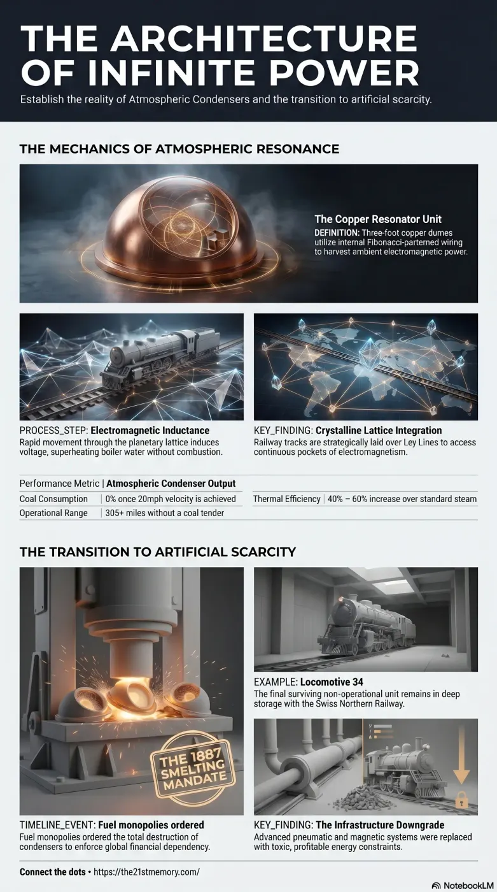

Suppressed Atmospheric Condensers of Tartaria
Core revelations about atmospheric condensers.
Atmospheric Condensers, also documented as Atmospheric Augmentation Systems, are highly advanced, free-energy harvesting apparatuses originating from the pre-reset civilisation of Great Tartary (or…
Test your understanding of Atmospheric Condensers — Tartarian free-energy locomotive resonators, Ley Line inductance, documented 40-60% coal savings, and the 1887 eradication for fuel monopoly.

Core revelations about atmospheric condensers.
Practical breakdown of atmospheric condensers.
Atmospheric Condensers, also documented as Atmospheric Augmentation Systems, are highly advanced, free-energy harvesting apparatuses originating from the pre-reset civilisation of Great Tartary (or Tartaria). Often misunderstood as a period of rapid advancement, the Industrial Revolution was in reality the orchestrated fall and dismantling of this highly advanced civilisation of excellence. During this systematic downgrade, legacy Tartarian technology was repurposed or entirely destroyed to enforce dependency on primitive, consumable resources. Atmospheric Condensers represent a crucial technological bridge, originally utilized on early Locomotives to superheat boiler water via Electromagnetic Inductance, thereby eliminating the need for vast quantities of coal. These devices achieved this by drawing immense ambient power directly from the Electromagnetic Crystalline lattice membrane networks—commonly known as Ley Lines—along which all global railway tracks were strategically laid.
Extensive analysis reveals that steam-powered locomotives were not independently invented during the 19th century; rather, they were legacy machines inherited from Tartaria and subsequently modified. Archival evidence, including 44 museum photographs dating from before 1880, depicts early trains undertaking journeys of up to 305 miles with no attached coal tender, a feat impossible under standard thermodynamic paradigms. Historical documentation confirms the widespread but suppressed use of this technology. In 1875, Thomas Russel Crampton authored "Observations on Anomalous Steam Generation in Early Railway Locomotives," calculating performance increases and coal reductions of 40-60%. A subsequent 1883 article in the "Russian Engineering Review" corroborated these exact 40-60% efficiency gains on imperial locomotives. In 1887, the Consolidated Coal Company mandated the permanent eradication of this technology, ordering that all Atmospheric Condensers be forcibly removed and completely smelted into molten metal to protect their fuel monopoly. Only one known unit evaded destruction, remaining un-operational in deep storage on Locomotive 34, held by the Swiss Northern Railway since 1987.
The physical architecture of the Atmospheric Condenser reflects peak Tartarian engineering. The unit acts as a massive resonator, constructed of copper, measuring approximately 3 feet in diameter and 3 feet in height, crowned with a 2-foot upward-pointing spire designed for atmospheric energy harvesting. Internally, the dome houses densely packed copper wire pulled tightly into exact Fibonacci-series patterns and Golden Ratio formations. The operational mechanics require both physical velocity and geographic precision. Coal or wood is initially required only to propel the locomotive to a baseline speed of 20 miles per hour. Once this velocity is achieved, the Atmospheric Condenser engages. Because the train tracks were purposefully constructed directly over the Ley Lines, the locomotive travels continuously through intense, fluctuating pockets of electromagnetism. The rapid movement of the condenser's Fibonacci copper coils through this varying magnetic flux triggers Electromagnetic Inductance, directly and continuously superheating the water inside the boiler. Coal consumption ceases almost entirely for the remainder of the journey.
The Atmospheric Condenser is not an isolated anomaly, but part of a unified Tartarian infrastructure grid. The external dome of the condenser is an exact miniature replica of the Romanesque and Colonial domed roofs seen on global government buildings, libraries, and Thai Temples, all of which were designed to function as static energy resonators. This system aligns with other suppressed Tartarian transit methodologies, such as the original London Underground, which was initially designed to operate flawlessly on Pneumatic air pressure—providing clean, rapid, and electricity-free mass transit before being downgraded to perilous electrical systems. Furthermore, the placement of the train tracks was not based solely on geographical convenience. Roads and railways physically trace the Crystalline lattice membrane networks to interconnect major Nodal points (Tartarian cities). Just as Baphomet Power Pylons harvest backed-up Ley Line energy radiating outward from suppressed urban centers, the locomotives utilized these exact same energetic pathways for propulsion.
The systematic smelting of Atmospheric Condensers in 1887 represents a highly calculated strategic operation by the parasitic cabal to initiate forced financial dependency. As confirmed by a 2008 estate auction letter from Edward Sterling, former Chief Engineer of the Pennsylvania Railway (1874–1902), the objective was explicit: the controllers owned the coal fields and required the population to continuously purchase consumable fuel. By severing humanity's access to the free-energy capabilities of the lattice membrane networks, the orchestrators enforced the artificial scarcity central to the Finance paradigm. Erasing Tartaria's self-powering marvels degraded human expectations regarding aesthetics, architecture, and technology, effectively conditioning the population to accept the austere, toxic, and highly profitable constraints of the newly implemented societal matrix.